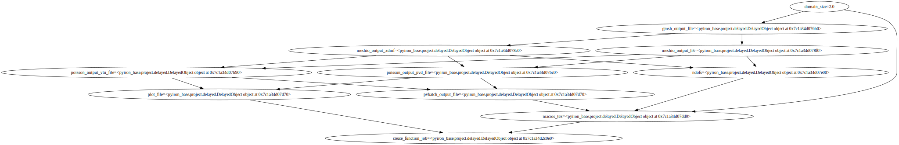

Load Simple Workflow#
Plot#
from python_workflow_definition.plot import plot
plot(file_name='workflow.json')

Aiida#
from python_workflow_definition.aiida import load_workflow_json
from aiida import load_profile
load_profile()
Profile<uuid='5b8a8d98b3014876a9eed7d85a954e5e' name='pwd'>
workgraph = load_workflow_json(file_name='workflow.json')
# TODO: Create inputs rather than tasks out of data nodes
workgraph
workgraph.run()
04/23/2025 09:52:22 AM <6139> aiida.orm.nodes.process.workflow.workchain.WorkChainNode: [REPORT] [284|WorkGraphEngine|continue_workgraph]: tasks ready to run: generate_mesh1
04/23/2025 09:52:24 AM <6139> aiida.orm.nodes.process.workflow.workchain.WorkChainNode: [REPORT] [284|WorkGraphEngine|update_task_state]: Task: generate_mesh1, type: PyFunction, finished.
04/23/2025 09:52:24 AM <6139> aiida.orm.nodes.process.workflow.workchain.WorkChainNode: [REPORT] [284|WorkGraphEngine|continue_workgraph]: tasks ready to run: convert_to_xdmf2
04/23/2025 09:52:26 AM <6139> aiida.orm.nodes.process.workflow.workchain.WorkChainNode: [REPORT] [284|WorkGraphEngine|update_task_state]: Task: convert_to_xdmf2, type: PyFunction, finished.
04/23/2025 09:52:26 AM <6139> aiida.orm.nodes.process.workflow.workchain.WorkChainNode: [REPORT] [284|WorkGraphEngine|continue_workgraph]: tasks ready to run: poisson3
04/23/2025 09:52:30 AM <6139> aiida.orm.nodes.process.workflow.workchain.WorkChainNode: [REPORT] [284|WorkGraphEngine|update_task_state]: Task: poisson3, type: PyFunction, finished.
04/23/2025 09:52:30 AM <6139> aiida.orm.nodes.process.workflow.workchain.WorkChainNode: [REPORT] [284|WorkGraphEngine|continue_workgraph]: tasks ready to run: plot_over_line4
04/23/2025 09:52:33 AM <6139> aiida.orm.nodes.process.workflow.workchain.WorkChainNode: [REPORT] [284|WorkGraphEngine|update_task_state]: Task: plot_over_line4, type: PyFunction, finished.
04/23/2025 09:52:33 AM <6139> aiida.orm.nodes.process.workflow.workchain.WorkChainNode: [REPORT] [284|WorkGraphEngine|continue_workgraph]: tasks ready to run: substitute_macros5
04/23/2025 09:52:35 AM <6139> aiida.orm.nodes.process.workflow.workchain.WorkChainNode: [REPORT] [284|WorkGraphEngine|update_task_state]: Task: substitute_macros5, type: PyFunction, finished.
04/23/2025 09:52:35 AM <6139> aiida.orm.nodes.process.workflow.workchain.WorkChainNode: [REPORT] [284|WorkGraphEngine|continue_workgraph]: tasks ready to run: compile_paper6
04/23/2025 09:52:38 AM <6139> aiida.orm.nodes.process.workflow.workchain.WorkChainNode: [REPORT] [284|WorkGraphEngine|update_task_state]: Task: compile_paper6, type: PyFunction, finished.
04/23/2025 09:52:38 AM <6139> aiida.orm.nodes.process.workflow.workchain.WorkChainNode: [REPORT] [284|WorkGraphEngine|continue_workgraph]: tasks ready to run:
04/23/2025 09:52:38 AM <6139> aiida.orm.nodes.process.workflow.workchain.WorkChainNode: [REPORT] [284|WorkGraphEngine|finalize]: Finalize workgraph.
executorlib#
from executorlib import SingleNodeExecutor
from python_workflow_definition.executorlib import load_workflow_json
with SingleNodeExecutor(max_workers=1) as exe:
result = load_workflow_json(file_name="workflow.json", exe=exe).result()
result
'/home/jovyan/postprocessing/paper.pdf'
Jobflow#
from jobflow.managers.local import run_locally
/srv/conda/envs/notebook/lib/python3.12/site-packages/paramiko/pkey.py:82: CryptographyDeprecationWarning: TripleDES has been moved to cryptography.hazmat.decrepit.ciphers.algorithms.TripleDES and will be removed from cryptography.hazmat.primitives.ciphers.algorithms in 48.0.0.
"cipher": algorithms.TripleDES,
/srv/conda/envs/notebook/lib/python3.12/site-packages/paramiko/transport.py:253: CryptographyDeprecationWarning: TripleDES has been moved to cryptography.hazmat.decrepit.ciphers.algorithms.TripleDES and will be removed from cryptography.hazmat.primitives.ciphers.algorithms in 48.0.0.
"class": algorithms.TripleDES,
from python_workflow_definition.jobflow import load_workflow_json
flow = load_workflow_json(file_name="workflow.json")
result = run_locally(flow)
result
2025-04-23 09:52:59,822 INFO Started executing jobs locally
2025-04-23 09:52:59,957 INFO Starting job - generate_mesh (3dfb7e61-0ac4-48e8-90b9-5dc1c8e9cc3a)
2025-04-23 09:53:01,321 INFO Finished job - generate_mesh (3dfb7e61-0ac4-48e8-90b9-5dc1c8e9cc3a)
2025-04-23 09:53:01,325 INFO Starting job - convert_to_xdmf (2457090f-84ec-40dc-87dc-16e1ecd5c5ef)
2025-04-23 09:53:03,102 INFO Finished job - convert_to_xdmf (2457090f-84ec-40dc-87dc-16e1ecd5c5ef)
2025-04-23 09:53:03,103 INFO Starting job - poisson (ddd8574c-2717-4d3c-a638-2e55670ae679)
2025-04-23 09:53:06,212 INFO Finished job - poisson (ddd8574c-2717-4d3c-a638-2e55670ae679)
2025-04-23 09:53:06,213 INFO Starting job - plot_over_line (669dc5b4-0fe1-41fa-8861-305009122991)
2025-04-23 09:53:08,100 INFO Finished job - plot_over_line (669dc5b4-0fe1-41fa-8861-305009122991)
2025-04-23 09:53:08,101 INFO Starting job - substitute_macros (bb6ad245-506d-4524-ae3e-e54bc4fcea61)
2025-04-23 09:53:09,122 INFO Finished job - substitute_macros (bb6ad245-506d-4524-ae3e-e54bc4fcea61)
2025-04-23 09:53:09,123 INFO Starting job - compile_paper (034ed702-2349-4e6b-b3e5-c5f83772b5aa)
2025-04-23 09:53:11,397 INFO Finished job - compile_paper (034ed702-2349-4e6b-b3e5-c5f83772b5aa)
2025-04-23 09:53:11,398 INFO Finished executing jobs locally
{'3dfb7e61-0ac4-48e8-90b9-5dc1c8e9cc3a': {1: Response(output='/home/jovyan/preprocessing/square.msh', detour=None, addition=None, replace=None, stored_data=None, stop_children=False, stop_jobflow=False, job_dir=PosixPath('/home/jovyan'))},
'2457090f-84ec-40dc-87dc-16e1ecd5c5ef': {1: Response(output={'xdmf_file': '/home/jovyan/preprocessing/square.xdmf', 'h5_file': '/home/jovyan/preprocessing/square.h5'}, detour=None, addition=None, replace=None, stored_data=None, stop_children=False, stop_jobflow=False, job_dir=PosixPath('/home/jovyan'))},
'ddd8574c-2717-4d3c-a638-2e55670ae679': {1: Response(output={'numdofs': 357, 'pvd_file': '/home/jovyan/processing/poisson.pvd', 'vtu_file': '/home/jovyan/processing/poisson000000.vtu'}, detour=None, addition=None, replace=None, stored_data=None, stop_children=False, stop_jobflow=False, job_dir=PosixPath('/home/jovyan'))},
'669dc5b4-0fe1-41fa-8861-305009122991': {1: Response(output='/home/jovyan/postprocessing/plotoverline.csv', detour=None, addition=None, replace=None, stored_data=None, stop_children=False, stop_jobflow=False, job_dir=PosixPath('/home/jovyan'))},
'bb6ad245-506d-4524-ae3e-e54bc4fcea61': {1: Response(output='/home/jovyan/postprocessing/macros.tex', detour=None, addition=None, replace=None, stored_data=None, stop_children=False, stop_jobflow=False, job_dir=PosixPath('/home/jovyan'))},
'034ed702-2349-4e6b-b3e5-c5f83772b5aa': {1: Response(output='/home/jovyan/postprocessing/paper.pdf', detour=None, addition=None, replace=None, stored_data=None, stop_children=False, stop_jobflow=False, job_dir=PosixPath('/home/jovyan'))}}
pyiron#
from python_workflow_definition.pyiron_base import load_workflow_json
delayed_object_lst = load_workflow_json(file_name="workflow.json")
delayed_object_lst[-1].draw()

delayed_object_lst[-1].pull()
The job generate_mesh_0b48cf5155cd6802c17d20bb58104132 was saved and received the ID: 1
The job convert_to_xdmf_29ad6ec6927268429dc9aef8166fde43 was saved and received the ID: 2
The job poisson_a0224b23ceb2119d105a5d98ef37f93e was saved and received the ID: 3
The job plot_over_line_82b37a42e0747f11d9a7f6318f63ac6b was saved and received the ID: 4
The job substitute_macros_874fc185ecec04b4cb9537c58b7efb7b was saved and received the ID: 5
The job compile_paper_3cee534ffe692833d37faf1fd2170cb6 was saved and received the ID: 6
'/home/jovyan/postprocessing/paper.pdf'
Python#
from python_workflow_definition.purepython import load_workflow_json
load_workflow_json(file_name="workflow.json")
'/home/jovyan/postprocessing/paper.pdf'